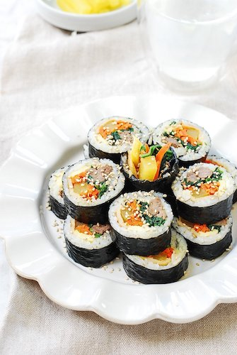

Kimbap

Description
Kimbap is a Korean street food that you can find in almost everywhere in
Korea.
Usually it contains some vegetables like carrot, spinach, pickled radish,
and burdock, eggs, crabsticks and ham or sausages.
But of course you can add any ingredients that you want, like kimchi,
spam, or even grilled pork belly!
The key point that makes it different from sushi is that the rice is
seasoned with sesame oil and salt, instead of vinegar and sugar.
Now, let's start!
Ingredients
- Short grain rice
- Seaweed for kimbap/sushi
- Carrot (julienned)
- Spinach
- Pickled radish (Danmuji)
- Braised burdock
- Eggs
- Crabsticks
- Sausages
- Sesame oil
- Sesame seed
Steps:
-
Cook the rice slightly drier than usual, then season with sesame oil and
salt.
- Stir fry the julienned carrot and season to taste.
-
Blanch or stir fry spinach, season to taste and squeeze out the extra
moisture.
- Cook the eggs either by making scrambled egg or rolled omelette.
- Cook the sausages your desired way.
-
After all the fillings have been prepared, place the seaweed on a clean
surface with the rough side facing up.
-
Grab a handful of rice and spread it as thin as you can on the seaweed.
- Place the filling at the bottom part of the rice.
-
Start rolling from bottom to top, make sure that it is tightly rolled,
otherwise it will break open once it's cut.
- Brush the roll with sesame oil and cut it with a sharp knife.
- Sprinkle with some sesame seed and enjoy!